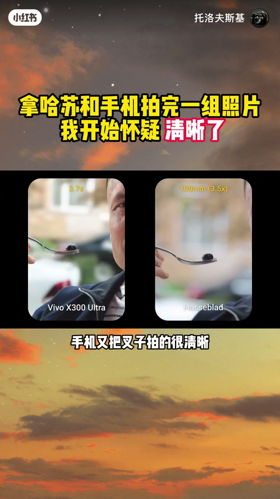
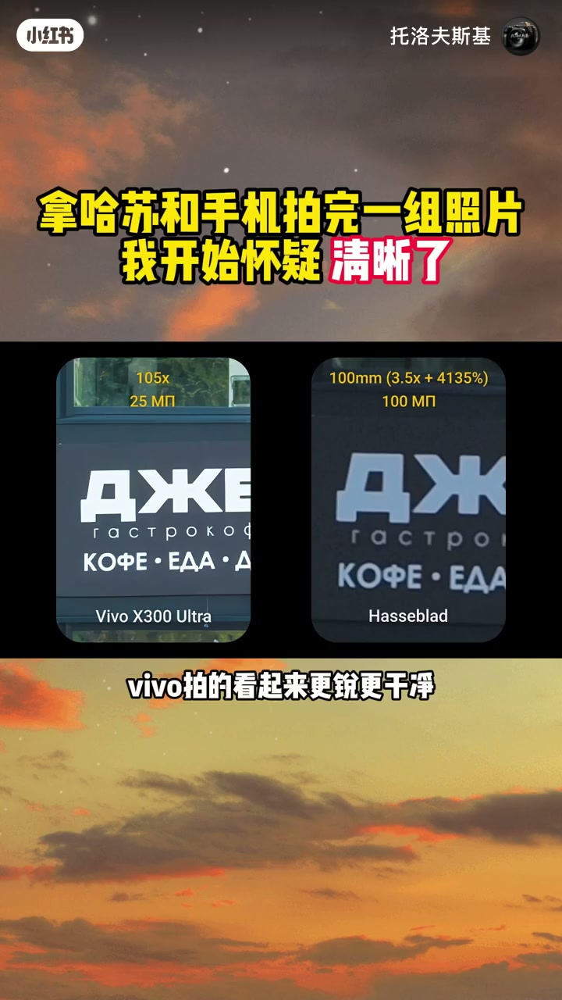
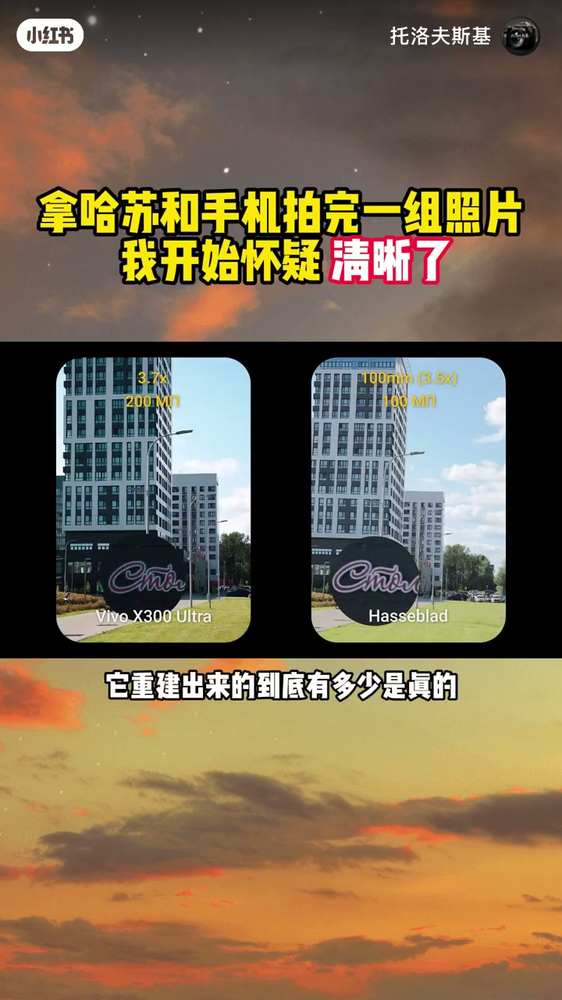
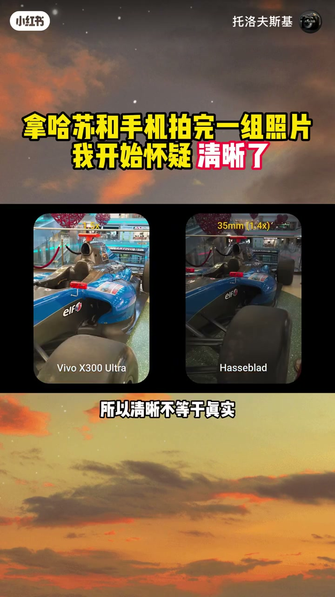
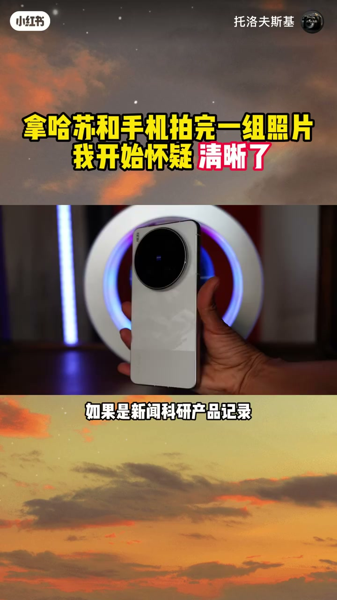
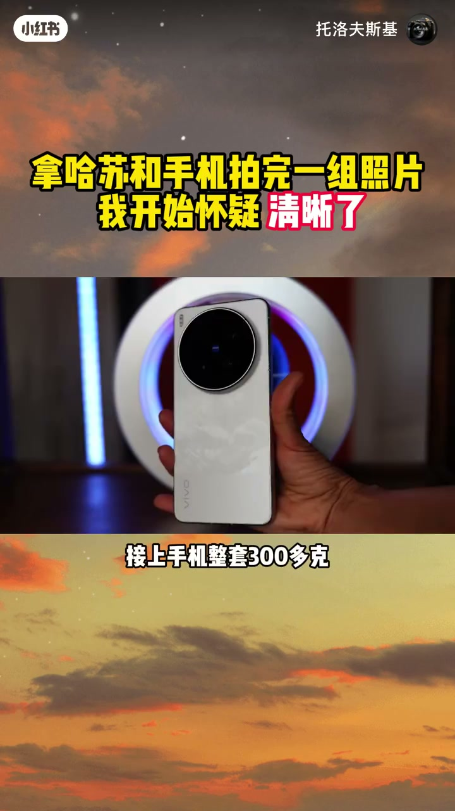
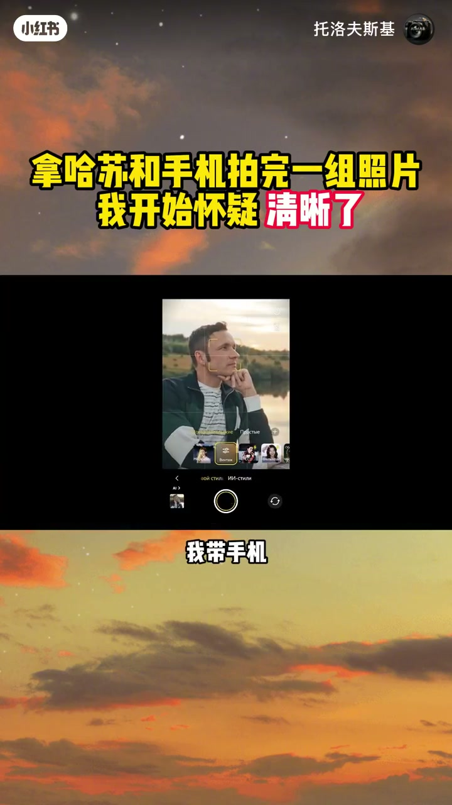

内容要点
「拿哈苏和手机拍完一组照片我开始怀疑清晰了」教程要点：如果今天只能带一台出门 → 我可能会把这台几万块的哈苏放在家里 → 带一台手机 → 不是因为手机已经超过了哈苏；详见正文。
知识结构
如果今天只能带一台出门
放大给你看
你说这是错的吗
- 如果今天只能带一台出门
- 我可能会把这台几万块的哈苏放在家里
- 带一台手机
- 不是因为手机已经超过了哈苏
- 而是我这次拍完以后发现
如果今天只能带一台出门
00:00–01:14如果今天只能带一台出门
如果今天只能带一台出门；我可能会把这台几万块的哈苏放在家里；带一台手机；不是因为手机已经超过了哈苏；而是我这次拍完以后发现；手机有时候拍到的根本不是你看到的；而是他认为你应该看到的；先看这张；你觉得这是手机拍的还是哈苏拍的；这台是vivo x300 ultra；这台是哈苏x2D 2代100c；手机现在的人像虚化已经非常像样；发丝这种过去最容易穿帮的地方；也能处理的很稳；但复杂边缘一多问题就出来了；超广角端；叉子几乎整个被错误虚化；换到主摄手机又把叉子拍的很清晰；而哈苏不需要判断；叉子在胶外光学自然就虚了；手机不是单靠光学形成这块虚化；而是在判断哪里应该虚；判断对了还好；判断错了；这个部位直接被抹掉；不过真正让我意外的还不是这个；放大看远处的文字；哈苏拍的细节平时带自然噪点；但最小号的字也能正常辨认；vivo拍的看起来更锐更干净；但文字变形了；为什么；手机不是单纯把传感器记录的东西

01:13–02:27放大给你看
放大给你看；他会把多帧信息放在一起；再用算法重建细节；说的直白一点；有些时候他不是在把细节拍下来；而是在把细节画出来；这里的话不是凭空生成；而是根据多帧和已有的信息；重建他认为最合理的细节；问题就来了；他重建出来的到底有多少是真的；再看高倍变焦下的人脸；vivo三个增强档位；胡茶看起来根根清晰；但这种清晰依然是算法处理之后的结果；你看到的每一根胡茶；有多少是镜头真正拍到的；又有多少是他认为应该长在那里的；噪点也一样；算法在抹掉噪点的同时；也可能把真实的纹理和细节一起抹掉；所以清晰不等于真实；那问题就更麻烦了；如果手机拍出来的照片；反而比现实更好看；那他到底算不算拍错了；看色彩；哈苏的色彩比较克制；成片和人眼看到的几乎一致；vivo哪怕开了自然模式；也更明亮更暖饱和度更高；当天其实没有这么浓烈的日落；但vivo把天空拍成了这个颜色


02:27–03:38你说这是错的吗
你说这是错的吗；我现在反而不想这么说；如果是新闻科研产品记录；真实性当然重要；在旅行美食生活；谁规定照片一定要和现实一模一样；记录现实是一种摄影；创造一个你想看到的现实；同样也是摄影；但手机真正改变摄影的可能不是画质；而是他把过去很重很贵的摄影能力；塞进了你的口袋；这颗是gr ultra 400毫米外接镜头；2000出头接上手机整套300多克；哈苏最长的原生镜头是135毫米；单镜头接近6万元；整套将近3000克；两套器材根本不是一个重量级；但手机揣进口袋；就能给你一张400毫米的画面；手机真正赢的不是相机的画质；而是相机的出秦率；你不愿意戴的器材等于不存在；真正好的器材不是参数最强；而是你愿意一直用；所以如果今天只能带一个出门；我带手机；但如果我要认真拍一组作品；我还是会拿起相机；所以我想把这个问题留给你；如果一张照片比现实更好看；但它已经不是现实本来的样子；你更愿意要真实还是好看




口述/画面要点（40段）
结合 Whisper medium 与画面大字整理；专有名词已校对。
如果今天只能带一台出门
我可能会把这台几万块的哈苏放在家里
带一台手机
不是因为手机已经超过了哈苏
而是我这次拍完以后发现
手机有时候拍到的根本不是你看到的
而是他认为你应该看到的
先看这张
你觉得这是手机拍的还是哈苏拍的
这台是vivo x300 ultra
这台是哈苏x2D 2代100c
手机现在的人像虚化已经非常像样
发丝这种过去最容易穿帮的地方
也能处理的很稳
但复杂边缘一多问题就出来了
超广角端
叉子几乎整个被错误虚化
换到主摄手机又把叉子拍的很清晰
而哈苏不需要判断
叉子在胶外光学自然就虚了
手机不是单靠光学形成这块虚化
而是在判断哪里应该虚
判断对了还好
判断错了
这个部位直接被抹掉
不过真正让我意外的还不是这个
放大看远处的文字
哈苏拍的细节平时带自然噪点
但最小号的字也能正常辨认
vivo拍的看起来更锐更干净
但文字变形了
为什么
手机不是单纯把传感器记录的东西
放大给你看
他会把多帧信息放在一起
再用算法重建细节
说的直白一点
有些时候他不是在把细节拍下来
而是在把细节画出来
这里的话不是凭空生成